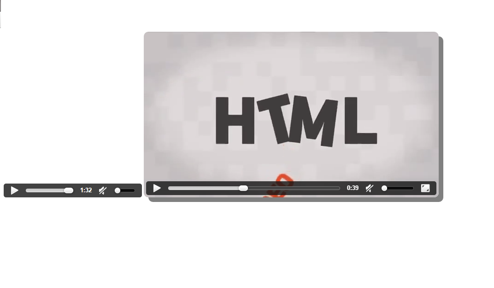

Portafolio de trabajos elaborados en clases en la materia Programacion WEB.
NOMBRE:
Sanchez Oviedo Alejandro
Numero de Control:
12171369
CARRERA:
Ing. en TICS
ESCUELA:
Instituto Tecnologico de Culiacan
MATERIA:
Programacion WEB
Primer Ejemplo Basico
Esta es mi primera página HTML. Aqui fue el primer ejemplo que vimos donde se utilizan links hacia la página y utilizando algunas etiquetas básicas.
Segundo Ejemplo
en este ejemplo utilizamos un link de enlace
Tercer Ejemplo
En esta Vimos ejemplo de Tablas.
Cuarto Ejemplo
En esta página Se hizo un ejemplo de Curriculum utilizando tablas e input para introducir los datos.
Primer ejemplo CSS en clase
Se vieron diseños en css agregandole color a los elemento y los botones del menú cambian de color sobrepasando el mouse.
Segundo Ejemplo css
 En esta ejemplo aprendimos a agregar un video y un archivo de audio, dándole sombra al los contornos.
Tercer Ejemplo css
En esta practica se utilizaron inputs y tambien se utilizaron elementos de bootstrap.
Practica css
Practica donde se le agregaron imágenes, secciones y otros elementos
Primer tarea css
practica utilizando etiquetas y algo nuevo fue agregar un footer ala pagina.
Segunda tarea css
El ejercicio es igual a los anteriores y estuvimos utilizando html5 y css.
practica css
Esta página la utilice para estudiar antes del examen tomando como base el examen de los que ya habían cursado esta materia el semestre pasado.
Primer Examen css
Este fue nuestro Primer examen de CSS.
Practica realizada en clase utilizando JS
En esta práctica se realizo una calculadora con Java Query…
Fueron clases muy importantes ya que utilizamos JS.
Practica utilizando PHP
Una de las ultimas practicas ya manejando lo esencial en la programacion de aplicaciones web, elemntos como JS, PHP, CSS, HTML y MySQL utilizando el registro de usuarios de la base de datos.